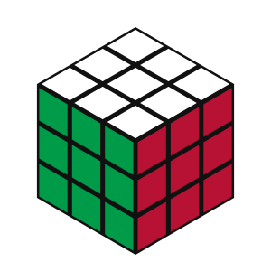

DRAFT NOTE: Double-check every fact before this page goes live.
A Puzzle Invented by Accident

In 1974, Ernő Rubik, a young teacher of architecture and design in Budapest, Hungary, wanted a hands-on way to show his students how objects move in three dimensions. He built a block of 27 small cubes that could twist without falling apart. When he scrambled the colors, he realized he had created a puzzle, and it took him about a month to solve it for the first time.
The puzzle went on sale in Hungary in 1977 under the name Magic Cube. In 1980, the Ideal Toy Corporation renamed it the Rubik's Cube and sold it around the world. Within a few years it became one of the best-selling toys in history, and hundreds of millions have been sold since.
Fun fact: Rubik did not set out to make a toy. He was trying to solve a design problem: how to let pieces turn independently without the whole structure falling apart.
Anatomy of the Cube
A standard 3×3 cube looks like 27 small cubes, but it really has 26 visible pieces built around a hidden core. Every piece belongs to one of three types:
- Centers (6): one sticker each. Centers never move relative to each other, so each center decides the color of its face.
- Edges (12): two stickers each, sitting between two centers.
- Corners (8): three stickers each, sitting where three faces meet.
The six face colors follow a standard scheme. Opposite faces are always paired: white is opposite yellow, red is opposite orange, and blue is opposite green.
The Math: 43 Quintillion Combinations
The number of different ways a 3×3 cube can be scrambled is:
43,252,003,274,489,856,000
That is more than 43 quintillion. If you could look at one new scramble every second, you would need over a trillion years to see them all.
Myth: A really bad scramble takes hundreds of moves to solve. In 2010, a team of researchers used thousands of hours of donated computer time to prove that every scramble can be solved in 20 moves or fewer. Puzzle fans call this number God's Number. The proof is a great example of computer science solving a problem that is too big to work out by hand.
Cube Notation
Cubers write moves with letters, one letter for each face. A letter by itself means turn that face a quarter turn clockwise, as if you were looking straight at that face.
F Front B Back U Up D Down L Left R Right
An apostrophe, called prime, means turn counterclockwise: R'. A 2 means turn the face twice (180 degrees): U2.
A list of moves is called an algorithm. Many beginner methods repeat this one:
R U R' U'
Solving It: The Beginner's Method
Most people learn to solve the cube one layer at a time, starting with the white face. Each stage uses a few short algorithms.
- Make a white cross on the top face, with each edge matching its side center.
- Insert the four white corners to finish the first layer.
- Place the four edges of the middle layer.
- Flip the top edges to make a yellow cross.
- Move the yellow edges so they match their side centers.
- Move the yellow corners into their correct spots.
- Twist the yellow corners until the whole cube is solved.
Faster solvers use a method called CFOP, which stands for Cross, First Two Layers, Orient Last Layer, Permute Last Layer. CFOP uses many more algorithms, and top solvers memorize well over 70 of them.
Speedcubing
Speedcubing is the sport of solving puzzles as fast as possible. Official competitions are run under the rules of the World Cube Association (WCA), which was founded in 2004. Before each solve, competitors get 15 seconds to inspect the scrambled cube. Most events are scored as an average of five solves, with the fastest and slowest times dropped.
At the first World Championship in Budapest in 1982, the winning time was about 23 seconds. Today the 3×3 world record single is under 4 seconds. Competitions also include one-handed solving, blindfolded solving, and puzzles of many shapes and sizes:
- 2×2 Pocket Cube
- 4×4 Rubik's Revenge
- 5×5 Professor's Cube
- Megaminx a 12-sided puzzle
- Pyraminx a triangular pyramid
Learn More
- World Cube Association (official records and competitions)
- Rubik's (the official company site, with a solving guide)
- Rubik's Cube on Wikipedia